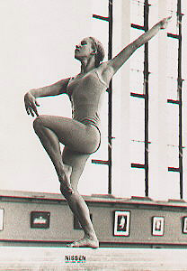

Kim Chace (USA)
1971 Pan American B Champion
1971 Pan American AA Bronze Medalist

Kim was born on May 4, 1956 in Tennessee and moved to Florida when she was 3. At age 8, Kim went to a tumbling class with a friend and started "working out" in her backyard. Her parents decided it would be a good idea to get their daughter into a gymnastics class. Kim trained with Bud Watson, a former trapeze artist with Ringling Brothers Circus, at the Wells Recreation Center in Riviera Beach, FL. Kim's father built a set of uneven bars and a balance beam in the backyard, and she was able to practice at home when she wasn't at the gym.
After Wells died in early 1969, Kim was coached by Gail Sontegrath (1960 Olympian) and later by her father. Kim's career took off in summer of 1969, when she won the AAU Junior Olympic Nationals in San Diego. In 1970, 14-year-old Kim was selected to the world championships team and was the youngest member of the US delegation. She won four medals at the 1971 Pan American Games and was a member of the 1972 Olympic team.
In mid 1973, Kim married Chuck Boyle and retired from gymnastics. She had a son, Christopher, in April 1974. She divorced Boyle in 1975 and began a comeback in the sport, which culminated in another Olympics team berth. Chace's 14th-place finish was the highest for the US women's team.
Competition Results
1966
Sarasota National Gymnastics Clinic (11 and under): 2nd UB, 3rd FX
1967
Florida AAU JO Championships: 2nd AA, 2nd V, 4th B
Sarasota National Gymnastics Clinic (10-12 group): 1st Aa, 1st UB, 1st FX
1968
AAU Regional Championships: 2nd AA
Florida AAU JO Championships: 1st Team, 1st AA
Sarasota National Gymnastics Clinic: 1st AA, 1st UB, 1st B, 1st FX
Southwest Florida Invitational Championships: 1st Team, 1st AA
Valastic Invitational (10-12): 1st AA
1969
AAU JO Nationals (junior division): 1st AA, 1st UB, 1st FX
AAU Regional Championships: 1st AA
Gold Coast District AAU Meet: 1st AA
1970
AAU Championships: 6th AA
Manitoba World Invitational: 2nd Team, 8th AA, 3rd FX
World Championships: 7th Team, 61st AA
World Trials: 5th AA, 1st UB, 3rd V, 4th FX
1971
Pan American Games: 1st Team, 3rd AA, 1st B, 2nd FX, 3rd UB, 4th V
Pan American Trials: 3rd AA
USA-USSR Dual Meet: 2nd Team, 10th AA
USGF Championships: 1st AA, 1st UB, 1st BB, 1st FX
World Cup: 2nd AA
1972
Chunichi Cup: 6th AA
Fukuoka Cup: 5th UB, 5th B
Olympic Games: 4th Team, 28th AA
Tokyo Cup: 7th AA
USA-JPN Dual Meet: 3rd V
USGF Championships: 3rd AA, 1st B, 3rd FX
1973
AAU Championships: 3rd AA, 1st B, 2nd FX
Antibes International: 1st AA
USA-ROM Dual Meet: 4th AA
USGF Elite Championships: 6th AA, 2nd UB, 3rd V, 5th FX
1975
1st National Elite Qualification Meet: 2nd AA
Region VIII Elite Qualifier: 1st AA
1976
Olympic Games: 6th Team, 14th AA
US Olympic Trials: 3rd AA
USA-CAN-MEX: 6th AA
USA Championships: 5th AA, 4th FX
This page was created on March 27,
2005 and was last updated on October 11, 2019.
© Gymn Forum